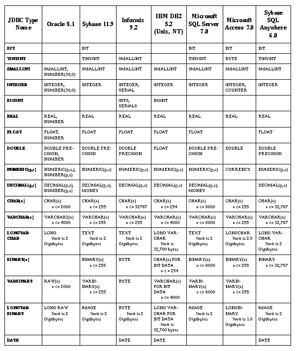

[D]
[D] SQLInput.readXXX 메소드가 지원하고 있는 것은, 추천 되고 있는 변환만입니다. 「x」는, 그 메소드가 JDBC 의 형태를 「꺼낼 수 있는 것」을 의미합니다. X」는, 그 메소드가 JDBC 의 형태를 취해 출의 것에 「추천 되고 있는 것」을 의미합니다.
주: 이 장의 내용은, Addison Wesley 사부터 Java 시리즈의 1 권으로서 출판된 「JDBCTM API Tutorial and Reference, Second Edition:Universal Data Access for the JavaTM 2 Platform」(ISBN 0-201-43328-1)에 근거해 작성한 것입니다.
SQL 의 데이터형은, Java 프로그램 언어의 데이터형과 동일하지 않기 때문에, Java 의 형태를 사용하는 어플리케이션과 SQL 의 형태를 사용하는 데이타베이스의 사이로, 데이터를 옮겨 환유익의 기구가 필요합니다. (본문중에서 사용되고 있는 「Java 의 형태」라고 하는 표현은, 「Java 프로그램 언어상의 형태」를 나타내고 있습니다)
Java 프로그램 언어로 기술되고 있는 어플리케이션과 데이타베이스의 사이에 데이터를 바꾸기 위해서(때문에), JDBC API 에서는, 다음의 3 개의 메소드를 제공하고 있습니다.
SELECT 의 결과를 Java 의 형태로서 취득하기 위한 ResultSet 클래스의 메소드
PreparedStatement 클래스의 메소드
OUT 파라미터를 Java 의 형태로서 취득하기 위한 CallableStatement 클래스의 메소드
이 마디에서는, 다양한 클래스나 인터페이스에 영향을 주는 데이터형에 대한 정보를 정리해 SQL 의 형태와 Java 의 형태의 사이의 매핑을 나타내는 일람을 참조하기 쉽게 1 개소에 두었습니다. 또, SQL3 의 형태를 포함한, 개개의 총칭 SQL 의 데이터형에 대해서도 설명합니다.
다른 데이타베이스 제품이 지원하는 SQL 의 형태의 사이에는, 상당한 상위가 있습니다. 다른 데이타베이스가 동일한 의미를 가지는 SQL 의 형태를 지원하고 있는 경우에서도, 그러한 형태에 다른 이름을 주고 있는 일이 있습니다. 예를 들어, 주요 데이타베이스의 대부분이 큰 바이너리치에 대한 SQL 의 형태를 지원하고 있습니다만, Oracle 에서는 이 형태를 LONG RAW, Sybase 에서는 IMAGE, Informix 에서는 BYTE, DB2 에서는 LONG VARCHAR FOR BIT DATA 와 각각 부르고 있습니다.
JDBC 프로그래머는, 일반적으로은, 타겟의 데이타베이스가 사용하고 있는 실제의 SQL 의 형명에 신경을 쓸 필요는 없습니다. 많은 경우, JDBC 프로그래머는, 기존의 데이타베이스의 테이블에 대해서 프로그래밍을 해, 그러한 테이블을 작성한 정확한 SQL 의 형명에 주위를 기울일 필요는 없습니다.
JDBC 는, 클래스 java.sql.Types 로 총칭 SQL 의 형태 식별자세트를 정의하고 있습니다. 그 세트의 형태는, 가장 일반적으로 사용되는 SQL 의 형태를 나타내도록(듯이) 설계되고 있습니다. JDBC API 에 의한 프로그래밍에서는, 프로그래머는 일반적으로, 타겟의 데이타베이스가 사용하고 있는 정확한 SQL 의 형명을 의식하는 일 없이, 그 세트의 JDBC 형을 사용해 총칭 SQL 의 형태를 참조할 수가 있습니다. 그러한 JDBC 형은, 다음의 마디로 자세하게 설명합니다.
프로그래머가 SQL 의 형명을 사용할 필요가 있는 것은, 주로 새로운 데이타베이스의 테이블을 작성하는 경우의 SQL CREATE TABLE 문안입니다. 이 경우에는, 프로그래머는, 그 타겟의 데이타베이스가 지원하고 있는 SQL 의 형명을 사용하도록(듯이) 주의할 필요가 있습니다. 「데이타베이스 고유의 SQL 의 형태에 매핑 되는 JDBC 의 형태」의 겉(표)는, 주요한 데이타베이스로 JDBC 의 형태로서 사용되고 있는 적절한 SQL 의 형명에 대한 제안을 제시하고 있습니다. 특정의 데이타베이스에서의 다양한 SQL 의 형태의 동작의 정확한 정의를 필요로 하는 경우에는, 그 데이타베이스의 메뉴얼을 참조하는 것을 추천합니다.
다양한 다른 데이타베이스상에서 테이블을 작성할 수 있는 이식성의 높은 JDBC 프로그램을 작성하고 싶은 경우에는, 2 개(살)의 주된 선택사항이 있습니다. 1 번째는,INTEGER,NUMERIC, 또는 VARCHAR 와 같은 모든 데이타베이스에 대해서 가동할 가능성의 높은, 매우 광범위해 받아들여지고 있는 SQL 의 형명만을 사용하도록(듯이) 제한하는 것입니다. 2 번째의 선택사항은,java.sql.DatabaseMetaData.getTypeInfo 메소드를 사용해, 어느 SQL 의 형태를 그 데이타베이스가 실제로 지원하고 있는지를 발견해, 지정의 JDBC 형에 일치하는 데이타베이스 고유의 SQL 의 형명을 선택하는 것입니다.
JDBC 는, JDBC 데이타베이스형으로부터 Java 에의 표준적인 매핑을 정의합니다. 예를 들어, JDBC INTEGER 는 일반적으로, Java int 에 매핑 됩니다. 이것은, JDBC 의 값을 단순한 Java 의 형태로서 읽고 쓰기하는 단순한 인터페이스를 지원합니다.
Java 의 형태는, SQL 타입과 정확하게 동형일 필요는 없습니다. 파라미터를 정확하게 포함하거나 꺼내거나 해, SQL 문으로부터의 결과를 복구하는데 충분한 형태의 정보로 그것들을 표현할 수 있으면 좋은 것뿐입니다. 예를 들어, Java 의 String 객체는, JDBC CHAR 형의 어느 것에도 엄밀하게는 일치합니다만,CHAR,VARCHAR, 또는 LONGVARCHAR 를 정상적으로 표현하는데 충분한 형태 정보를 줍니다.
여기에서는, JDBC 1.0 으로 2.0 API 의 양쪽 모두로 지원되고 있는 JDBC 의 데이터형에 대해 설명합니다. 또, 표준의 SQL 의 형태 및 Java 프로그램 언어의 형태와의 관계에 대해서도 설명합니다. JDBC 2.0 코어 API 로 도입된 새로운 JDBC 의 데이터형은,8.4 절로 설명합니다.
JDBC 의 형태 CHAR,VARCHAR, 및 LONGVARCHAR 는 밀접하게 관련하고 있습니다. CHAR 는 짧은 고정장의 캐릭터 라인을,VARCHAR 는 짧은 가변 길이의 캐릭터 라인을,LONGVARCHAR 는 긴 가변 길이의 캐릭터 라인을 각각 나타냅니다.
JDBC CHAR 에 대응하는 SQL CHAR 형은 SQL-92 로 정의되어 모든 주요한 데이타베이스에 의해 지원되고 있습니다. 캐릭터 라인의 길이를 지정하는 파라미터를 취합니다. 따라서,CHAR(12) 는 12 문자장의 캐릭터 라인을 정의합니다. 모든 주요한 데이타베이스는,CHAR 장을 최고 254 문자까지 지원하고 있습니다.
JDBC VARCHAR 에 대응하는 SQL VARCHAR 형은 SQL-92 로 정의되어 모든 주요한 데이타베이스에 의해 지원되고 있습니다. 캐릭터 라인의 최대 길이을 지정하는 파라미터를 취합니다. 따라서,VARCHAR(12) 는 그 길이가 최고 12 문자장의 캐릭터 라인을 정의합니다. 모든 주요한 데이타베이스는,VARCHAR 의 길이를 최고 254 문자까지 지원하고 있습니다. 캐릭터 라인치가 VARCHAR 변수에 할당할 수 있으면(자), 데이타베이스는 할당할 수 있었던 캐릭터 라인의 길이를 기억해, 그것의 SELECT 시에 정확하게 원의 캐릭터 라인을 돌려줍니다.
JDBC LONGVARCHAR 형에는, 일관한 SQL 매핑이 존재하지 않습니다. 모든 주요한 데이타베이스는, 적어도 1G 바이트까지 지원하는, 어떤 종류의 매우 긴 가변 길이의 캐릭터 라인을 지원합니다만, SQL 의 형명은 다릅니다. 예에 대해서는,「데이타베이스 고유의 SQL 의 형태에 매핑 되는 JDBC 의 형태」의 겉(표)를 참조해 주세요.
Java 의 프로그래머는,CHAR,VARCHAR, 및 LONGVARCHAR 의 JDBC 캐릭터 라인의 3 개의 형태를 구별할 필요가 없습니다. 각각은 Java 의 String 로서 표현할 수가 있어 필요하게 된 정확한 데이터형을 몰라도 SQL 문을 올바르게 읽고 쓰기할 수가 있습니다.
CHAR,VARCHAR, 및 LONGVARCHAR 는,String 또는 char[] 의 어느 것으로에서도 매핑 할 수가 있습니다만,String 가 일반적으로의 사용을 위해서(때문에)는 보다 적절합니다. 또,String 클래스에 의해,String 와 char[] 의 사이의 변환이 보다 간단하게 됩니다. String 객체를 char[] 로 변환하는 메소드가 있어, 또 char[] 를 String 객체에 조정하는 생성자 도 있습니다.
대처해야 할 문제의 1 개는,CHAR(n) 형의 고정장 SQL 캐릭터 라인을 어떻게 처리할까입니다. 최적인 것은, JDBC 드라이버 (또는 DBMS)가 공백에서 적절한 패딩을 실시하는 것입니다. 따라서 CHAR(n) 필드가 데이타베이스로부터 꺼내졌을 때, 드라이버가 그것을 길이가 n 의 Java 의 String 객체로 변환합니다만, 이것에는 말미에 패딩의 공백이 몇개인가 포함되어 있을 가능성이 있습니다. 이것과는 반대로,String 객체가 CHAR(n) 필드에 송신되면(자), 드라이버 또는 데이타베이스, 혹은 그 양쪽 모두가 필요한 패딩용 공백을 캐릭터 라인의 말미에 추가해, 그 길이를 n 로 합니다.
메소드 ResultSet.getString 는, 새로운 String 객체를 할당하거나 돌려주거나 합니다만, 데이터를 CHAR,VARCHAR, 및 LONGVARCHAR 필드로부터 꺼내는 것을 추천합니다. 이것은 일반적으로의 데이타를 뽑기 시작하기에는 적절합니다만, JDBC 의 LONGVARCHAR 형을 사용해 무엇 메가바이트인가의 캐릭터 라인을 보존하는 경우는 취급하기 어려운 일이 있습니다. 이러한 케이스를 처리하기 위해서,ResultSet 인터페이스의 2 개의 메소드에 의해, 프로그래머가 LONGVARCHAR 의 값을 임의의 사이즈의 덩어리로 시퀀셜에 데이터를 읽어낼 수 있는 Java 입력 스트림로서 꺼낼 수가 있도록(듯이) 하고 있습니다. 이러한 메소드는 getAsciiStream 와 getCharacterStream 로,LONGVARCHAR 열에 보존되고 있는 데이터를 ASCII 또는 Unicode 문자의 스트림로서 전달합니다. 메소드 getUnicodeStream 는, 추천 되고 있지 않습니다.
후술 하는 SQL3 의 CLOB 데이터형을 사용해, 대량의 문자 데이터를 나타낼 수도 있습니다.
JDBC 의 형태 BINARY,VARBINARY, 및 LONGVARBINARY 는 밀접하게 관련하고 있습니다. BINARY 는 작은 고정장의 바이너리치를,VARBINARY 는 작은 가변 길이의 바이너리치를,LONGVARBINARY 는 큰 가변 길이의 바이너리치를 각각 나타냅니다.
이상의 BINARY 형은 표준화 되지 않고, 지원는 주요한 데이타베이스간에 상당히 변동합니다.
JDBC BINARY 에 대응하는 SQL BINARY 형은, 비표준의 SQL 의 확장으로, 일부의 데이타베이스에 구현되고 있는에 지나지 않습니다. 바이너리 바이트의 수를 지정하는 파라미터를 취합니다. 따라서,BINARY(12) 는 12 바이트의 바이너리형을 정의합니다. 일반적으로,BINARY 치는 254 바이트로 한정되고 있습니다.
JDBC VARBINARY 에 대응하는 SQL VARBINARY 형은, 비표준의 SQL 의 확장으로, 일부의 데이타베이스에 구현되고 있는에 지나지 않습니다. 바이너리 바이트의 최대수를 지정하는 파라미터를 취합니다. 따라서,VARBINARY(12) 는 그 길이의 최대 길이이 12 바이트인 바이너리형을 정의합니다. 일반적으로,VARBINARY 치는 254 바이트로 한정되고 있습니다. 바이너리치가 VARBINARY 변수에 할당할 수 있으면(자), 데이타베이스는 할당할 수 있었던 값의 길이를 기억해, 그것의 SELECT 시에, 원의 값을 정확하게 돌려줍니다.
JDBC LONGVARBINARY 형에 대응하는 일관한 SQL 의 형태는 존재하지 않습니다. 모든 주요한 데이타베이스는, 적어도 1G 바이트의 데이터를 지원하는, 어떤 종류의 매우 큰 가변 길이의 바이너리형을 지원합니다만, 그 SQL 의 형명은 다릅니다. 예에 대해서는,「데이타베이스 고유의 SQL 의 형태에 매핑 되는 JDBC 의 형태」의 겉(표)를 참조해 주세요.
BINARY,VARBINARY, 및 LONGVARBINARY 는, Java 프로그램 언어에서는 byte 배열로서 모두 똑같이 표현할 수 있습니다. 요구되고 있는 BINARY 데이터형을 정확하게 몰라도, SQL 문을 올바르게 읽고 쓰기할 수 있기 (위해)때문에, Java 프로그램 언어로 코드를 기술하는 프로그래머가 그러한 형태를 구별할 필요는 없습니다.
BINARY 나 VARBINARY 의 값을 꺼내기 위해서(때문에) 추천 되는 메소드는,ResultSet.getBytes 입니다. JDBC LONGVARBINARY 형의 열이, 무엇 메가바이트장의 바이트 배열을 보존하고 있는 경우에는,getBinaryStream 메소드를 추천합니다. LONGVARCHAR 의 경우와 같게, 이 메소드는 프로그래머가 LONGVARBINARY 치를, 나중에보다 작은 덩어리로 읽을 수 있는 Java 입력 스트림로서 꺼내는 것을 가능하게 합니다.
후술 하는 SQL3 의 BLOB 데이터형을 사용해, 대량의 바이너리 데이터를 나타낼 수도 있습니다.
JDBC 형의 BIT 는, 0 이나 1 을 취할 수 있는 단일의 비트치를 나타냅니다.
SQL-92 는, SQL BIT 형을 정의합니다. 그러나, JDBC BIT 형과는 달라, 이 SQL-92 BIT 형은, 고정장의 바이너리열을 정의하는 파라미터화한 형태로서 사용할 수가 있습니다. SQL-92 는, 단일의 비트를 나타내는데 단순한 비파라미터화 BIT 형의 사용도 허락하고 있습니다. 이 사용은, JDBC BIT 형에 대응하고 있습니다. SQL-92 BIT 형은, 「완전한」 SQL-92 에 대해만 요구되어 현재, 주요한 데이타베이스의 일부 밖에 지원되고 있지 않습니다. 따라서, 이식성을 바라는 코드에서는, 넓게 지원되고 있는 JDBC SMALLINT 형의 (분)편을 사용하는 것을 추천합니다.
JDBC BIT 형에 대해서 추천 되는 Java 매핑은, Java 의 boolean 형으로 하는 것입니다.
JDBC 형의 TINYINT 는,0 에서 255 까지의 부호 붙어 또는 부호 없음의 8 비트의 정수치를 나타냅니다.
대응하는 SQL 의 형태의 TINYINT 는 현재, 주요한 데이타베이스의 일부에서 밖에 지원되고 있지 않습니다. 따라서, 이식성을 바라는 코드에서는, 넓게 지원되고 있는 JDBC SMALLINT 형의 (분)편을 사용하는 것을 추천합니다.
JDBC TINYINT 형에 대해서 추천 되고 있는 Java 매핑은, Java byte 나 Java short 의 어느 쪽인지입니다. 8 비트의 Java byte 형은 -128 으로부터 127 까지의 부호 첨0 보다 작은 값을 나타내므로, 보다 큰 TINYINT 치에 대해서 항상 적절히 된다고는 할 수 없습니다. 다만, 16 비트의 Java short 는 항상 모든 TINYINT 치를 보관 유지할 수가 있습니다.
JDBC 형의 SMALLINT 는,-32768 으로부터 32767 까지의 16 비트의 부호 첨부 정수치를 나타냅니다.
대응하는 SQL 의 형태의 SMALLINT 는 SQL-92 로 정의되어 모든 주요가 데이타베이스에 의해 지원되고 있습니다. SQL-92 표준에서는,SMALLINT 의 정밀도를 구현에 맡기고 있습니다만, 실제로는, 모든 주요한 데이타베이스는 적어도 16 비트를 지원하고 있습니다.
JDBC SMALLINT 형에 대해서 추천 되는 Java 매핑은, Java short 로 하는 것입니다.
JDBC 형의 INTEGER 는,-2147483648 으로부터 2147483647 까지의 32 비트의 부호 첨부 정수치를 나타냅니다.
대응하는 SQL 의 형태의 INTEGER 는 SQL-92 로 정의되어 모든 주요한 데이타베이스에 의해 넓게 지원되고 있습니다. SQL-92 표준에서는,INTEGER 의 정밀도를 구현에 맡기고 있습니다만, 실제로는, 모든 주요한 데이타베이스는 적어도 32 비트를 지원하고 있습니다.
JDBC INTEGER 형에 대해서 추천 되는 Java 매핑은, Java int 로 하는 것입니다.
JDBC 형의 BIGINT 는, -9223372036854775808 으로부터 9223372036854775807 까지의 64 비트의 부호 첨부 정수치를 나타냅니다.
대응하는 SQL 의 형태의 BIGINT 는, SQL 의 비표준의 확장입니다. 실제, SQL BIGINT 형은, 주요등의 데이타베이스에도 현재 구현되고 있지 않습니다. 따라서, 이식성을 바라는 코드에서는, 사용을 피하는 것을 추천합니다.
JDBC BIGINT 형에 대해서 추천 되는 Java 매핑은, Java long 로 하는 것입니다.
JDBC 형의 REAL 는, 7 자리수의 가수부를 지원하는 「단정밀도」의 부동 소수점수(실수)입니다.
대응하는 SQL 의 형태의 REAL 는 SQL-92 로 정의되어 모든 주요한 데이타베이스에 의해, 일반적이지는 않습니다만, 넓게 지원되고 있습니다. SQL-92 표준에서는,REAL 의 정밀도를 구현에 맡기고 있습니다만, 실제로는,REAL 를 지원하는 모든 주요한 데이타베이스는 적어도 7 자리수의 가수 정밀도를 지원하고 있습니다.
JDBC REAL 형에 대해서 추천 되는 Java 매핑은, Java float 로 하는 것입니다.
JDBC 형의 DOUBLE 는, 15 자리수의 가수부를 지원하는 「배정밀도」의 부동 소수점수(실수)입니다.
대응하는 SQL 의 형태는,DOUBLE PRECISION 이며 SQL-92 로 정의되어 모든 주요한 데이타베이스에 의해, 넓게 지원되고 있습니다. SQL-92 표준에서는,DOUBLE PRECISION 의 정밀도를 구현에 맡기고 있습니다만, 실제로는,DOUBLE PRECISION 의 정밀도를 지원하는 모든 주요한 데이타베이스는 적어도 15 자리수의 가수 정밀도를 지원하고 있습니다.
JDBC DOUBLE 형에 대해서 추천 되는 Java 매핑은, Java double 로 하는 것입니다.
JDBC 형의 FLOAT 는, 기본적으로는 JDBC 형의 DOUBLE 와 등가입니다. FLOAT 와 DOUBLE 의 양쪽 모두를 제공한 것은, 이전의 데이타베이스의 API 와의 일관성을 유지하려고 했기 때문에입니다만, 혼란을 일으키는 위험성이 생각됩니다. FLOAT 는, 15 자리수의 가수부를 지원하는 「배정밀도」부동 소수점수(실수)입니다.
대응하는 SQL 의 형태의 FLOAT 는 SQL-92 로 정의되고 있습니다. SQL-92 표준에서는,FLOAT 의 정밀도를 구현에 맡기고 있습니다만, 실제로는,FLOAT 를 지원하는 모든 주요한 데이타베이스는 적어도 15 자리수의 가수 정밀도를 지원하고 있습니다.
이 FLOAT 형에 대해서 추천 되는 Java 매핑은, Java double 로 하는 것입니다. 다만, 배정밀도의 SQL FLOAT 와 단정밀도의 Java float 와의 사이의 혼란이 예상되기 (위해)때문에, JDBC 프로그래머는, 일반적으로의 경우에는,FLOAT 보다 JDBC DOUBLE 형을 사용하는 것을 추천합니다.
JDBC 형의 DECIMAL 와 NUMERIC 는 매우 닮았습니다. 양쪽 모두, 고정 정밀도의 10 진수를 나타냅니다. 대응하는 SQL 의 형태 DECIMAL 및 NUMERIC 는, SQL-92 로 정의되고 있어 광범위하게 구현되고 있습니다. 이러한 SQL 의 형태는, 정밀도와 스케일의 파라미터를 취합니다. 정밀도는, 지원되고 있는 10 진수의 총자리수로, 스케일은, 소수점 이하의 자리수입니다. 대부분의 DBMS 에서는, 스케일은 정밀도 이하입니다. 예를 들어, 「12.345」의 정밀도는 5 이며, 스케일은 3 이 됩니다. 「. 11」의 정밀도는 2 이며, 스케일은 2 가 됩니다. JDBC 는, 모든 DECIMAL 의 형태와 NUMERIC 의 형태가, 적어도 15 자리수의 정밀도와 스케일을 지원하는 것을 요구하고 있습니다.
DECIMAL 와 NUMERIC 의 유일한 상위는, SQL-92 스펙이,NUMERIC 형이 정확하게 지정의 정밀도로 표현되는 것을 요구하는 한편으로,DECIMAL 형에서는, 형태의 생성시로 지정된 정밀도를 넘은 정밀도를 추가하는 것을 구현에 허락하고 있는 점에 있습니다. 따라서, 형태의 NUMERIC(12,4) 로 작성된 열은, 항상 정확하게 12 자리수로 나타내져 형태의 DECIMAL(12,4) 로 작성된 열은, 보다 큰 자리수로 나타내지는 일도 있습니다.
DECIMAL 와 NUMERIC 의 값을 꺼내기 위해서(때문에) 추천 되는 메소드는,ResultSet.getBigDecimal 입니다. JDBC 는, 단순한 Strings 또는 char 의 배열로서 이러한 SQL 의 형태에의 액세스도 가능하게 합니다. 따라서, Java 프로그래머는,getString 를 사용해 NUMERIC 또는 DECIMAL 의 결과를 받을 수가 있습니다. 다만, 이것에 의해, 어플리케이션의 작성자가 캐릭터 라인상에서 산술 계산을 하는 것이 필요하게 되므로,DECIMAL 또는 NUMERIC 를 통화의 값으로 해서 사용하는 일반적인 경우가, 오히려 취급하기 어려워집니다. 이러한 SQL 의 형태를 Java 의 수치형의 어떤 것일까하고 해 꺼내는 일도 가능합니다.
시간에 관련하는 JDBC 의 형태에는 이하의 3 개가 있습니다.
DATE 형은 일자, 달, 및 해로 구성된다. 대응하는 SQL DATE 형은 SQL-92 로 정의되고 있지만, 주요한 데이타베이스의 일부 밖에 지원하고 있지 않다. 데이타베이스안에는, 같은 의미를 가지는 대체네의 SQL 의 형태를 제공하는 것도 있다
TIME 형은, 시각, 분 , 초로 구성된다. 대응하는 SQL TIME 형은 SQL-92 로 정의되고 있지만, 주요한 데이타베이스의 일부 밖에 지원하고 있지 않다. DATE 의 경우와 같이, 데이타베이스안에는, 같은 의미를 가지는 대체네의 SQL 의 형태를 제공하는 것도 있다
TIMESTAMP 형은 DATE 와 TIME 와 나노초필드를 나타낸다. 대응하는 SQL TIMESTAMP 형은 SQL-92 로 정의되고 있지만, 매우 소수의 데이타베이스가 구현하는 것만으로 있다
표준의 Java 클래스 java.util.Date 는, 이것들 3 개의 JDBC 의 형태에 정확하게는 일치하고 있지 않았기 때문에 (표준의 Java 클래스에는 DATE 와 TIME 의 정보는 있지만, 나노초는 없다), JDBC 는 java.util.Date 의 3 개의 서브 클래스를 정의해, SQL 의 형태에 대응하고 있습니다. 이것들은 이하대로입니다.
DATE 정보를 위한 java.sql.Date. java.util.Date base class의 시각, 분, 초, 및 밀리 세컨드 필드에는 제로가 설정될 필요가 있다. java.sql.Date 생성자 에 제공되는 밀리 세컨드가 부의 수의 경우는, 드라이버는 그 일자를 1970 년 1 월 1 일 이전의 밀리 세컨드 수라고 해 계산한다. 부가 아닌 경우는, 그 일자를 1970 년 1 월 1 일 이후의 밀리 세컨드 수라고 해 계산한다
TIME 정보를 위한 java.sql.Time. java.util.Date base class의 년, 달, 날 필드는, 1970 년 1 월 1 일로 설정된다. Java 의 달력(일력)으로는 이것이 「제로」일이 된다
TIMESTAMP 정보를 위한 java.sql.Timestamp. java.util.Date 클래스의 상속. 나노초필드가 추가되고 있다
JDBC 의 3 개의 시간 관련의 클래스는 모두 java.util.Date 의 서브 클래스이므로,java.util.Date 가 기대되고 있는 장소에서 사용할 수가 있습니다. 예를 들어, 국제화 메소드는 java.util.Date 객체를 인수로서 취하므로, JDBC 시간 관련 클래스의 어떤 것인가의 인스턴스로서 건네줄 수가 있습니다.
JDBC Timestamp 객체에는, 그 부모의 일자와 시간의 원가요소와 그것과는 별도로 나노초의 원가요소도 있습니다. java.util.Date 객체가 기대되고 있는 개소에서,java.sql.Timestamp 객체를 사용하면(자), 나노초의 원가요소는 없어집니다. 다만,java.util.Date 객체가 1 밀리 세컨드의 정밀도로 보존되고 있으므로,java.sql.Timestamp 객체를 java.util.Date 객체로 변환했을 때에 이 정도의 정밀도를 유지하는 것은 가능합니다. 이것은, 나노초원가요소안의 나노초를 (나노초의 수치를 1,000,000 으로 나누는 것으로 ) 밀리 세컨드로 환산하고 나서, 결과를 java.util.Date 객체에 가산합니다. 999,999 나노초까지는 이 변환에 의해 없어집니다만, 결과적으로 생기는 java.util.Date 객체는 1 밀리 세컨드 이내의 오차의 정밀도를 가집니다.
다음의 부분적인 코드는, 1 밀리 세컨드 이내의 정밀도를 가지는 java.util.Date 객체에 java.sql.Timestamp 객체를 변환하는 예입니다.
Timestamp t = new Timestamp(98724573287540L); java.util.Date d; d = new java.util.Date(t.getTime() + (t.getNanos() / 1000000));
JDBC 2.0 코어 API 의 새로운 메소드를 사용하면(자), 드라이버에 의해 일자, 시각, 또는 타임 스탬프가 계산될 때, 지정된 타임 존이 고려됩니다. 타임 존 정보는,java.util.Calendar 객체에 짜넣어지고 있습니다. 이 객체는,Date,Time, 및 Timestamp 의 값의 취득 및 설정에 사용되는 새로운 버젼의 메소드에게 건네집니다. 타임 존이 지정되어 있지 않은 경우는, 일자, 시각, 및 타임 스탬프의 계산시에 어플리케이션이 동작하고 있는 Virtual Machine 의 타임 존이 사용됩니다.
ISO (International Organization for Standardization) 및 IEC (International Electrotechnical Commission)는, 일반적으로 SQL3 의 형태로 불리는 새로운 데이터형을 정의하고 있습니다. 이러한 새로운 SQL3 의 데이터형 가운데,BLOB,CLOB,ARRAY, 및 REF 는 미리 정의되고 있는 형태입니다. 이것에 대해, SQL 의 구조화형 및 DISTINCT 형은, 사용자 정의의 형태 (UDT)입니다. 이러한 새로운 형태는,DISTINCT 이외는 JDBC 2.0 코어 API 의 새로운 인터페이스에 매핑 됩니다. 여기에서는, 각 데이터형에 대해 간단하게 설명합니다. 각 형에 대한 자세한 것은, 해당하는 인터페이스의 레퍼런스의 장에 있습니다. DISTINCT 데이터형에 대한 장도 있습니다만,DISTINCT 형은 편입의 형태에 매핑 되기 (위해)때문에, 개개의 인터페이스는 없습니다.
JDBC 2.0 코어 API 의 새로운 데이터형은, RDB로 사용되는 데이터형이 큰폭으로 확장된 것입니다. 이러한 데이터형은, 객체에 의해 한층 닮았습니다. 실제, 새로운 데이터형안의 2 개의 데이터형은 UDT 이므로, Java 프로그램 언어의 클래스에 커스텀 매핑 할 수가 있습니다. 3 번째의 UDT (JAVA_OBJECT)는, Java 프로그램 언어로 정의된 클래스의 인스턴스입니다. JDBC 2.0 코어 API 의 새로운 데이터형은, 고도의 기능을 가지고 있습니다만, 모두 JDBC 1.0 API 의 데이터형과 같이 편리하게 사용할 수가 있습니다. 예를 들어, 이러한 데이터형을 데이타베이스 테이블의 열의 값으로 해서 사용해, 적절한 getXXX 및 setXXX 메소드를 사용해, 꺼내 및 보존을 실시할 수가 있습니다.
JDBC 의 형태 BLOB 는, SQL3 의 BLOB (Binary Large Object)를 나타냅니다.
JDBC BLOB 의 값은, Java 프로그램 언어의 Blob 인터페이스의 인스턴스에 매핑 됩니다. 드라이버가 표준적인 구현에 준거하고 있는 경우,Blob 객체는, 객체의 바이너리 데이터를 포함하지 않고, 서버상의 BLOB 치를 논리적으로 가리키므로, 효율이 크게 향상합니다. Blob 인터페이스는, BLOB 데이터를 클라이언트상에 필요시에 실체화하기 위한 메소드를 제공하고 있습니다.
JDBC 의 형태 CLOB 는, SQL3 의 형태 CLOB (Character Large Object)를 나타냅니다.
JDBC CLOB 의 값은, Java 프로그램 언어의 Clob 인터페이스의 인스턴스에 매핑 됩니다. 드라이버가 표준적인 구현에 준거하고 있는 경우,Clob 객체는, 객체의 문자 데이터를 포함하지 않고, 서버상의 CLOB 치를 논리적으로 가리키므로, 효율이 크게 향상합니다. Clob 인터페이스의 2 개의 메소드에 의해, CLOB 객체의 데이터가 클라이언트상에 실체화됩니다.
JDBC 의 형태 ARRAY 는, SQL3 의 형태 ARRAY 를 나타냅니다.
ARRAY 의 값은, Java 프로그램 언어의 Array 인터페이스의 인스턴스에 매핑 됩니다. 드라이버가 표준적인 구현에 준거하고 있는 경우는,ARRAY 객체는, 객체의 요소를 포함하지 않고, 서버상의 ARRAY 치를 논리적으로 가리키므로, 효율이 크게 향상합니다. Array 인터페이스에는, 클라이언트상의 ARRAY 객체의 요소를, 배열 또는 ResultSet 객체의 형식에서 실체화하는 메소드가 포함되어 있습니다.
JDBC 의 형태 DISTINCT 는, SQL3 의 형태 DISTINCT 를 나타냅니다.
표준적인 매핑에서는, DISTINCT 형은,DISTINCT 객체의 기저형이 매핑 되는 Java 의 형태에 매핑 됩니다. 예를 들어, 기저형이 CHAR 의 DISTINCT 형은,String 객체에 매핑 됩니다. 기저형이 SQL INTEGER 의 DISTINCT 형은,int 에 매핑 됩니다.
DISTINCT 형은, Java 프로그램 언어에 커스텀 매핑 할 수도 있습니다. 커스텀 매핑은,SQLData 인터페이스를 구현하는 클래스, 및, java.util.Map 객체내의 엔트리로 구성됩니다.
JDBC 의 형태 STRUCT 는, SQL3 의 구조화형을 나타냅니다. SQL 의 구조화형은, 사용자에 의해 CREATE TYPE 문을 사용해 정의되는, 1 개(살) 이상의 속성으로 구성되는 형태입니다. 이러한 속성에는, 짜넣어 끝나 또는 사용자 정의의 임의의 SQL 의 데이터형을 지정할 수 있습니다.
표준적인 매핑에서는, SQL 의 형태 STRUCT 는, Java 프로그램 언어의 Struct 객체에 매핑 됩니다. Struct 객체에는, 객체가 나타내는 STRUCT 치의 각 속성의 값이 포함됩니다.
STRUCT 치는, Java 프로그램 언어의 클래스에 커스텀 매핑 할 수 있습니다. STRUCT 내의 각 속성은, 클래스의 필드에 매핑 할 수 있습니다. 커스텀 매핑은,SQLData 인터페이스를 구현하는 클래스, 및, java.util.Map 객체내의 엔트리로 구성됩니다.
JDBC 의 형태 REF 는, SQL3 의 형태 REF<structured type> 를 나타냅니다. SQL REF 는, SQL 의 구조화형의 인스턴스를 참조, 즉 논리적으로 가리킵니다. 이 인스턴스는,REF 에 의해 지속적 및 일의에 식별됩니다. Java 프로그램 언어에서는,Ref 인터페이스는 SQL REF 를 나타냅니다.
클라이언트상에 실체화한 속성치를 가지지 않게 해, 어플리케이션으로부터 데이타베이스의 SQL 구조화형의 인스턴스를 가리키도록(듯이) 하고 싶은 경우에는, REF<structured type> 형, 즉 SQL 구조화형에의 참조를 사용할 수 있습니다.
REF 치는, SQL 구조화형의 특정의 인스턴스에 대해서 특별히 작성된 일의의 식별자입니다. 이 값은, 값이 참조하는 인스턴스와 함께, 서버상의 특정의 테이블에 영속적으로 보존됩니다. 어플리케이션으로부터 그 특별한 테이블의 REF 치를 select 하면, 그 REF 치에 의해 식별되는 구조화형의 인스턴스 대신에 그 REF 치를 사용할 수 있습니다.
JDBC 2.0 코어 API 에 추가된 JDBC 형의 JAVA_OBJECT 를 사용하면(자), Java 프로그램 언어의 객체를, 데이타베이스의 값으로 해서 간단하게 사용할 수 있습니다. JAVA_OBJECT 는, Java 프로그램 언어로 정의되고 있는 클래스의 인스턴스에 대한 단순한 형태의 코드로, 데이타베이스의 객체로서 보존됩니다. JAVA_OBJECT 형은, Java 객체를 직접 보존할 수 있도록(듯이) 형태 시스템이 확장되고 있는 데이타베이스로 사용됩니다. JAVA_OBJECT 의 값은, 직렬화 된 Java 객체로서 또는 벤더 고유의 형식에서 보존됩니다.
JAVA_OBJECT 형은,getTypeInfo,getColumns,getUDTs 등을 포함한, 다양한 DatabaseMetaData 메소드로부터 반환되는 ResultSet 객체내의 DATA_TYPE 열이 취할 수 있는 값의 1 개입니다. 새로운 JDBC 2.0 코어 API 의 일부인 getUDTs 메소드는, 적절한 파라미터가 건네받으면(자), 특정의 schema에 보존되고 있는 Java 객체의 정보를 돌려줍니다. 이 정보를 이용할 수 있으면(자), Java 클래스를 데이타베이스의 형태로서 간단하게 사용할 수 있습니다.
JAVA_OBJECT 형의 값이 지원되는 DBMS 의 경우는, 값은 PreparedStatement.setObject 메소드를 사용해 데이타베이스 테이블에 보존됩니다. 이 값은,ResultSet.getObject 또는 CallableStatement.getObject 메소드를 사용해 꺼내,ResultSet.updateObject 메소드를 사용해 갱신합니다.
예를 들어,Engineer 클래스의 인스턴스가 PERSONNEL 테이블의 ENGINEERS 열에 보존되고 있으면(자) 가정하면(자), 다음의 부분적인 코드는, 기술자의 이름이 모두 출력합니다. stmt 는,Statement 객체입니다.
ResultSet rs = stmt.executeQuery("SELECT ENGINEERS FROM PERSONNEL");
while (rs.next()) {
Engineer eng = (Engineer) rs.getObject("ENGINEERS");
System.out.println(eng.lastName + ", " + eng.firstName);
}
Engineer 의 모든 인스턴스를 포함한 ResultSet 객체 rs 가 쿼리로부터 돌려주어져getObject 메소드에 의해 각 인스턴스가 차례로 꺼내집니다. getObject 로부터 반환되는 값은 Object 형이므로, 변수 eng 에 대입하기 전에, 상세한 Engineer 형에 네로우 변환할 필요가 있습니다.
Java 프로그램 언어로 기술된 프로그램이 데이터를 데이타베이스로부터 꺼낸다고 하는 상황에서는, 반드시 하등의 형태로 매핑과 데이터 변환이 필요합니다. 대부분의 경우, JDBC API 를 사용하는 프로그래머는, 자신이 대상으로 하고 있는 데이타베이스의 짜에 대한 지식을 가지고 있습니다. 즉, 데이타베이스에 어떠한 테이블이 있어, 그러한 테이블의 각 열의 데이터형이 무엇이지에 대해 알고 있습니다. 따라서,ResultSet,PreparedStatement, 및 CallableStatement 의 인터페이스로 고정적으로 입력한 액세스 메소드를 사용할 수가 있습니다. 이 마디에서는, 3 개(살)이 다른 시나리오를 나타내는 것과 동시에, 각각의 경우에 필요한 데이터의 매핑과 변환에 대해 설명합니다.
무엇보다 일반적인 케이스에서는, 사용자가 간단한 SQL 문을 실행해, 결과를 가지는 ResultSet 객체를 받습니다. 데이타베이스가 돌려주어,ResultSet 열에 보존되는 각 치는, JDBC 의 데이터형을 가지고 있습니다. ResultSet.getXXX 메소드에의 호출은, 그 값을 Java 의 데이터형으로서 꺼냅니다. 예를 들어,ResultSet 열에 JDBC 의 FLOAT 치가 들어가 있는 경우, 메소드 getDouble 는 그 값을 Java 의 double 로서 꺼냅니다. 표 8.6 은, 어느 getXXX 메소드가 어느 JDBC 의 형태를 꺼내기 위해서(때문에) 사용되는지를 나타냅니다. ResultSet 열의 형태를 모르는 사용자는, 메소드 ResultSet.getMetaData 를 호출하고 나서,ResultSetMetaData.getColumnType 를 호출하는 것으로, 그 정보를 취득할 수가 있습니다.
이제(벌써) 1 개의 시나리오에서는, 사용자가 입력 파라미터를 취하는 SQL 쿼리를 송신합니다. 이 경우, 사용자는 PreparedStatement.setXXX 메소드를 호출해, 각 입력 파라미터에 값을 할당합니다. 예를 들어,PreparedStatement.setLong(1, 2345678) 는, 최초의 파라미터에 2345678 이라고 하는 값을 Java 의 long 로서 할당합니다. 드라이버는, 데이타베이스에 송신하기 위해서,2345678 을 JDBC 의 BIGINT 로 변환합니다. 드라이버가 데이타베이스에 어느 JDBC 의 형태를 송신할까는, Java 의 형태로부터 JDBC 의 형태에의 표준적인 매핑에 의해 결정됩니다. 이 표준적인 매핑은,표 8.2 에 나타나고 있습니다.
한층 더 이제(벌써) 1 개의 시나리오에서는, 사용자가 스트아드프로시쟈를 호출해, 값을 그 INOUT 파라미터에 할당해ResultSet 객체로부터 값을 꺼내, 파라미터로부터 값을 꺼냅니다. 이 케이스는 너무 일반적이지 않고, 일반적으로의 경우보다 복잡합니다만, 매핑과 데이터 변환의 좋은 예가 되겠지요.
이 시나리오에서는 우선,PreparedStatement.setXXX 메소드를 사용해,INOUT 파라미터에 값을 할당합니다. 더해, 파라미터도 출력에 사용되므로, 프로그래머는 데이타베이스가 돌려주는 값의 JDBC 형과 함께 각 파라미터를 등록할 필요가 있습니다. 이것은, 클래스 Types 에 정의된 JDBC 의 형태의 1 개를 취하는 메소드 CallableStatement.registerOutParameter 를 사용해 실시합니다. 프로그래머는,CallableStatement.getXXX 메소드를 사용해, 출력 파라미터에 보존된 값을 꺼냅니다.
CallableStatement. getXXX 로 사용되는 XXX 형은, 그 파라미터에 등록된 JDBC 의 형태에 매핑 할 필요가 있습니다. 예를 들어, 데이타베이스가, JDBC REAL 라고 하는 형태의 출력치를 돌려준다고 기대되고 있는 경우, 파라미터는 java.sql.Types.REAL 로서 등록되어 있을 필요가 있습니다. 다음에 JDBC REAL 치를 꺼내기 위해서(때문에)는, 메소드 CallableStatement.getFloat 를 호출할 필요가 있습니다 (JDBC 의 형태로부터 Java 의 형태에의 매핑은,표 8.1 에 나타나고 있습니다). 메소드 getFloat 는, 출력 파라미터에 보존되고 있는 값을 JDBC REAL 로부터 Java float 로 변환하고 나서 돌려줍니다. 다양한 데이타베이스에 대응해, 어플리케이션의 이식성을 높이기 위해서(때문에), 값을 출력 파라미터로부터 꺼내기 전에, 값을 ResultSet 객체로부터 꺼내는 것을 추천합니다.
이하의 코드는 ,함께 INOUT 파라미터가 2 개 붙어 있어, 일반적으로의 JDBC ResultSet 를 돌려주는 getTestData 라는 이름의 스트아드프로시쟈를 호출하는 방법을 나타냅니다. 우선,Connection 객체 con 가,CallableStatement 객체 cstmt 를 생성합니다. 다음에, 메소드 setByte 가 최초의 파라미터에 Java byte 로 25 를 설정합니다. 드라이버는,25 를 JDBC TINYINT 로 변환해, 데이타베이스에 송신합니다. 메소드 setBigDecimal 가, 2 번째의 파라미터를 83.75 라고 하는 입력치로 설정합니다. 드라이버는, 이 Java BigDecimal 객체를 JDBC NUMERIC 의 값으로 변환합니다. 다음에, 2 개의 파라미터가 OUT 파라미터로서 등록되어 최초의 파라미터가 JDBC TINYINT, 2 번째의 파라미터가 소수점 제 2 위까지를 가지는 JDBC NUMERIC 가 됩니다. cstmt 가 실행된 다음에,ResultSet.getXXX 를 사용해 ResultSet 객체로부터 값이 꺼내집니다. 메소드 getString 는 최초의 열의 값을 Java String 객체로서 취득해,getInt 는 2 번째의 열의 값을 Java int 로서 취득해, 2 번째의 getInt 는 3 번째의 열의 값을 Java int 로서 가져옵니다.
다음에,CallableStatement.getXXX 메소드가, 출력 파라미터에 보존된 값을 꺼냅니다. 메소드 getByte 가 JDBC TINYINT 를 Java byte 로서 꺼내,getBigDecimal 가 소수점 제 2 위까지를 가지는 JDBC NUMERIC 를, Java BigDecimal 객체로서 꺼냅니다. 파라미터가 입출력 파라미터의 경우,setXXX 메소드는 getXXX 와 같은 Java 형의 것을 사용합니다 (setByte 및 getByte 와 같이). registerOutParameter 메소드는, 그것을 Java 의 형태로부터 매핑 되는 JDBC 의 형태에 등록합니다. Java byte 는,표 8.2 로 나타나도록(듯이), JDBC TINYINT 에 매핑 됩니다.
CallableStatement cstmt = con.prepareCall(
"{call getTestData(?, ? )}");
cstmt.setByte(1, 25);
cstmt.setBigDecimal(2, 83.75);
// register the first parameter as a JDBC TINYINT and the second
// as a JDBC NUMERIC with two digits after the decimal point
cstmt.registerOutParameter(1, java.sql.Types.TINYINT);
cstmt.registerOutParameter(2, java.sql.Types.NUMERIC, 2);
ResultSet rs = cstmt.executeQuery();
// retrieve and print values in result set
while (rs.next()) {
String name = rs.getString(1);
int score = rs.getInt(2);
int percentile = rs.getInt(3);
System.out.print("name = " + name + ", score = " + score);
System.out.println(", percentile = " + percentile);
}
// retrieve values in output parameters
byte x = cstmt.getByte(1);
java.math.BigDecimal n = cstmt.getBigDecimal(2);
일반화하면(자),CallableStatement.getXXX 와 CallableStatement.setXXX 메소드의 XXX 는 Java 의 형태입니다. setXXX 메소드에 대해서는, 데이타베이스에 송신하기 전에, (표 8.2 에 나타난 표준적인 매핑을 사용해) 드라이버가 Java 의 형태를 JDBC 의 형태로 변환합니다. getXXX 메소드에 대해서는,getXXX 메소드에 돌려주어지기 전에, 데이타베이스에 의해 반환된 JDBC 의 형태를 드라이버가 (표 8.1 에 나타난 표준적인 매핑을 사용해) Java 의 형태로 변환합니다.
메소드 registerOutParameter 는 항상, JDBC 의 형태를 인수로서 취해, 메소드 setObject 는 JDBC 의 형태를 인수로서 취합니다.
옵션의 3 번째의 인수에, JDBC 의 형태가 공급되는 경우, 메소드 setObject 에 의해, 파라미터의 값이 Java 의 형태로부터 지정된 JDBC 의 형태에 명시적으로 변환되는 것에 주의해 주세요. 변환 후의 JDBC 의 형태가 setObject 에 공급되어 있지 않은 경우는, 파라미터치는 Java 의 Object 형으로부터의 표준적인 매핑의 JDBC 의 형태에 변환됩니다 (표 8.4 를 참조). 드라이버는, 파라미터를 데이타베이스에 송신하기 전에, 명시적 또는 암묵적인 변환을 실시합니다.
SQL3 의 사용자 정의형 (UDT)인 구조화형 및 DISTINCT 형은, Java 프로그램 언어의 클래스에 커스텀 매핑 할 수 있습니다. 커스텀 매핑이 설정되어 있는 경우, 드라이버는 UDT 에 대해서 JDBC 와 Java 간의 형태 변환을 실시할 때, 표준적인 매핑 대신에 커스텀 매핑을 사용합니다.
UDT 는,ResultSet.getObject 및 CallableStatement.getObject 메소드를 사용해 데이타베이스로부터 꺼내져PreparedStatement.setObject 메소드를 사용해 원의 데이타베이스에 답신됩니다. 어플리케이션이 UDT 를 꺼내기 위해서(때문에) getObject 메소드를 호출하면(자), 드라이버는 접속에 관련지을 수 있고 있는 형태 맵이 그 UDT 의 엔트리를 가지고 있을지 어떨지 검사합니다. 엔트리가 존재하고 있는 경우, 드라이버는 그 형태 맵을 사용해 커스텀 매핑 합니다. 일치하는 엔트리가 존재하지 않는 경우, 드라이버는 표준적인 매핑을 사용합니다.
대부분의 커스텀 매핑은, 접속의 형태 맵을 사용해 행해집니다. 그렇지만, 드라이버에 다른 형태 맵을 사용하게 할 수도 있습니다. 커스텀 매핑이 가능한 메소드는, 2 개의 버젼을 가집니다. 형태 맵을 파라미터로서 취하는 메소드라고 취하지 않는 메소드입니다. 일반적으로은, 형태 맵이 지정되지 않기 때문에, 드라이버는 접속의 형태 맵을 디폴트로 사용합니다. 메소드에 형태 맵이 건네받았을 경우는, 그 형태 맵이 접속의 형태 맵보다 우선되어 드라이버는, 접속에 관련지을 수 있었던 형태 맵 대신에, 이 형태 맵을 사용해 UDT 를 매핑 합니다. 건네받은 형태 맵에 UDT 의 엔트리가 존재하지 않는 경우는, 드라이버는, 표준적인 매핑을 실시합니다.
setObject 메소드는, 파라미터로서 형태 맵을 취하지 않기 때문에, 조금 다른 동작이 됩니다. setObject 에 SQLData 인터페이스를 구현하고 있는 클래스의 인스턴스 (즉 꺼내졌을 때에 커스텀 매핑 되고 있던 객체 )가 건네받았을 경우는, 드라이버에는, 이 객체를 매핑하기 위한 기구가 벌써 설정되어 있습니다. 드라이버는, 데이타베이스에 송신하기 전에, UDT 를 그 SQL 의 형태에 매핑 해, 클래스 인스턴스를 변환합니다. setObject 메소드에 의해 설정되는 파라미터가, 커스텀 매핑되어 있지 않은 경우는, 드라이버는, 데이타베이스에 송신하기 전에, 표준적인 매핑을 사용해 변환합니다.
사용자가 액세스 하고 싶은 것은, 컴파일시에 그 데이터형을 알 수 있고 있는 결과 또는 파라미터인 경우가 대부분입니다. 다만, 총칭 브라우저 또는 쿼리툴등의 어플리케이션은, 액세스 하는 데이타베이스 schema를 모르는 상태로 컴파일 됩니다. 이 때문에, JDBC 에서는 정적 데이터 액세스에 가세해, 완전하게 동적인 데이터 액세스도 지원하고 있습니다.
3 개의 메소드가, 컴파일시에 데이터형이 불명한 값에 액세스 하는 것을 지원합니다.
예를 들어, 어플리케이션이, 다양한 형태를 ResultSet 객체 중(안)에서 결과적으로 받아들이는 것을 가능하게 하고 싶은 경우에는,ResultSet.getObject 를 사용할 수가 있습니다.
ResultSet.getObject 와 CallableStatement.getObject 의 양메소드는 Java Object 로서 값을 꺼냅니다. Object 는, 모든 Java 객체에 대한 base class이므로, 임의의 Java 클래스의 인스턴스는 Object 의 인스턴스로서 꺼내는 것이 가능합니다. 다만, Java 의 형태 boolean,char,byte,short,int,long,float, 및 double 는, 편입형의 「프리미티브(primitive)」형이므로,Object 클래스의 인스턴스로는 되지 않습니다. 결과적으로, 상기의 형태는,getObject 메소드에서는 꺼낼 수가 없습니다. 다만, 그러한 원시형에는, 래퍼로서 가동한다, 각각 대응하는 클래스가 있습니다. 그러한 클래스의 인스턴스는 객체이며, 즉 ResultSet.getObject 와 CallableStatement.getObject 의 양메소드에 의해 꺼내는 것이 가능하게 됩니다. 표 8.3 은, JDBC 형으로부터 Java Object 형에의 매핑을 나타냅니다. 이 표는, JDBC 형으로부터 Java 형에의 표준적인 매핑과는 달라, 각 프리미티브(primitive)의 Java 형은 그 래퍼 클래스가 잡아 대신합니다. 다만, JDBC TINYINT 와 JDBC SMALLINT 는, Java 클래스의 Integer 에 매핑 됩니다.
JDBC 2.0 코어 API 에의 기능 추가에 의해, Java 객체를 데이타베이스에 보다 간단하게 보존할 수 있게 되었습니다. JDBC 1.0 API 의 PreparedStatement.setObject 메소드는, Java 프로그램 언어로 정의된 객체의 영속적인 보존을 벌써 지원하고 있습니다. 새로운 데이터형 JAVA_OBJECT 와 새로운 메소드 DatabaseMetaData.getUDTs 에 의해, 데이타베이스내에 보존된 Java 객체의 추적이 보다 간단하게 되었습니다.
이 마디에는, JDBC 와 Java 의 데이터의 형태에 관련하는 이하의 겉(표)를 기재합니다.
표 8.1-Java 의 형태에 매핑 되는 JDBC 의 형태
이 표는, JDBC 의 형태와 Java 의 형태의 개념상의 대응을 나타내고 있습니다. 프로그래머는 이 매핑을 명심해, 코드를 기술할 필요가 있습니다. 예를 들어, 데이타베이스내의 값이SMALLINT의 경우, JDBC 어플리케이션으로 사용하는 데이터형은,short가 됩니다.
getObject이외의 모든 CallableStatement.getXXX 메소드는, 이 매핑을 사용합니다.CallableStatement및ResultSet인터페이스의getObject메소드는,「Java 의 객체형에 매핑 되는 JDBC 의 형태」의 매핑을 사용합니다.
표 8.2-JDBC 의 형태에 매핑 되는 Java 의 형태
이 표는, ResultSet.updateXXX 메소드 및 IN 파라미터에 대해서 드라이버가 사용하는 매핑을 나타내고 있습니다. PreparedStatement.setXXX 메소드 및 RowSet.setXXX 메소드는, 이 표를 사용해 Java 의 형태인 IN 파라미터를, 데이타베이스에 송신하기 위한 JDBC 의 형태에 매핑 합니다. 이러한 2 개의 인터페이스의 setObject 메소드는,「JDBC 의 형태에 매핑 되는 Java 의 객체형」 의 매핑을 사용합니다.
표 8.3-Java 의 객체형에 매핑 되는 JDBC 의 형태
이 표는, ResultSet.getObject 및 CallableStatement.getObject 의 표준적인 매핑으로 사용됩니다.
표 8.4-JDBC 의 형태에 매핑 되는 Java 의 객체형
타겟의 JDBC 의 형태를 나타내는 파라미터가 지정되지 않는 경우는, PreparedStatement.setObject 및 RowSet.setObject 에서는, 이 표의 매핑이 사용됩니다.
표 8.5-setObject 에 의한 Java 의 객체형으로부터 JDBC 의 형태에의 변환
이 표는, 타겟측의 JDBC 의 형태로서 어느 JDBC 형을, PreparedStatement.setObject 및 RowSet.setObject 메소드로 지정할 수 있을까 가리키고 있습니다.
표 8.6-ResultSet.getXXX 메소드에 의해 지원되고 있는 형태 변환
이 표는, ResultSet.getXXX 메소드에 의해 반환되는 JDBC 의 형태를 나타내고 있습니다. 굵은 글씨의 X 는, JDBC 의 형태의 꺼내에 추천 되는 메소드입니다. 보통 x 는,getXXX 메소드를 사용할 수 있는 JDBC 의 형태를 나타내고 있습니다.
이 표는, SQLInput.readXXX 메소드로 사용되는 변환 (추천 되고 있는 변환을 사용할 뿐(만큼)의 것은 제외하다 )도 포함하고 있습니다.
표 8.7-데이타베이스 고유의 SQL 의 형태에 매핑 되는 JDBC 의 형태
이 표는, 개개의 데이타베이스에 의해 사용되고 있는, JDBC 의 형태에 가장 가까운 데이터형의 이름을 나타냅니다.
이 표에는, 2 개의 목적이 있습니다. 우선, 이 표는, Java 프로그램 언어의 형태와 SQL 의 형태와의 사이의 일반적인 대응을 나타내고 있습니다. 또,CallableStatement.getXXX 메소드 및 SQLInput.readXXX 메소드에 의해 사용되는 매핑도 나타내고 있습니다. CallableStatement.getObject 메소드로 사용되는 매핑에 대해서는, 표 8.3 을 참조해 주세요.
String 에 대한 매핑은 일반적으로 VARCHAR 입니다만, 값이 VARCHAR 치에 대한 드라이버의 한계를 넘고 있는 경우는,LONGVARCHAR 가 됩니다. byte[] 의 경우도 마찬가지로,VARCHAR 치에 대한 드라이버의 한계에 응해,VARBINARY 또는 LONGVARBINARY 치에 매핑 됩니다. 대부분의 경우,CHAR 와 VARCHAR 의 선택은 중요하지는 않습니다. 드라이버에 의해 적절히 선택됩니다. BINARY 와 VARBINARY 의 선택도 같습니다.
이 표는,ResultSet.getObject 및 CallableStatement.getObject 메소드로 사용되는, JDBC 의 형태로부터 Java 의 객체형에의 매핑을 나타내고 있습니다.
이 표는, 타겟의 JDBC 의 형태를 나타내는 파라미터가 지정되지 않는 경우에,PreparedStatement.setObject 메소드로 사용되는 매핑입니다. PreparedStatement.setObject 메소드에 대해서 지정할 수 있는 JDBC 의 형태는, 표 8.5 를 참조해 주세요.
String 에 대한 매핑은 일반적으로 VARCHAR 입니다만, 값이 VARCHAR 치에 대한 드라이버의 한계를 넘고 있는 경우는,LONGVARCHAR 가 되는 것에 주의해 주세요. byte[] 의 경우도 마찬가지로,VARCHAR 치에 대한 드라이버의 한계에 응해,VARBINARY 또는 LONGVARBINARY 가 됩니다.
「x」는, 그 Java 의 객체형을 대응하는 JDBC 의 형태로 변환할 수 있는 경우가 있는 것을 나타내고 있습니다. 이 표는, PreparedStatement.setObject 또는 RowSet.setObject 메소드에 건네주는 타겟측의 JDBC 의 형태를 지정하는 파라미터의 가능성을 나타내고 있습니다. 지정한 값이 무효인 경우, 몇개의 변환은 실행시에 실패합니다.
[D]
SQLInput.readXXX 메소드가 지원하고 있는 것은, 추천 되고 있는 변환만입니다. 「x」는, 그 메소드가 JDBC 의 형태를 「꺼낼 수 있는 것」을 의미합니다. X」는, 그 메소드가 JDBC 의 형태를 취해 출의 것에 「추천 되고 있는 것」을 의미합니다.
데이타베이스 마다, 지원되고 있는 SQL 의 형태는 크게 차이가 납니다. 표 8.7 은, 주요한 데이타베이스에 대해, JDBC 의 형태에 가장 가까운 데이타베이스 고유의 SQL 의 형태를 나타내고 있습니다. 데이타베이스 고유의 형태의 이름의 존재는, 「데이타베이스 고유의 형태가 추가의 시멘틱스를 제공하고 있는 경우가 있는 것에도 불구하고, 대응하고 있는 JDBC 의 형태의 시멘틱스를 달성하는데, 그 주어진 형태가 사용됩니다. 」(을)를 나타내고 있습니다.
주의：
DATE 또는 TIME, 혹은 그 양쪽 모두를 포함할 수가 있는 DATE 형 또는 DATETIME 형이 제공됩니다.
VARCHAR 와 VARCHAR2 는, Oracle8 에서는 동의어입니다.
LONGVARCHAR 에 대해서 DB2 는, 2G 바이트의 제한과 함께 「CLOB(n)」도 지원하고 있습니다.
LONGVARBINARY 에 대해서, DB2 는, 2G 바이트의 제한과 함께 「BLOB(n)」도 지원하고 있습니다.
BINARY,VARBINARY, 및LONGVARBINARY 리터럴의 취급은, 데이타베이스에 의해 크게 다릅니다. 이식 가능한 방법으로 값을 설정하는데, PreparedStatement.setBytes 를 사용하는 것을 추천합니다.
DATE,TIME, 및 TIMESTAMP 리터럴의 취급은, 데이타베이스에 의해 크게 다릅니다. 이식 가능한 방법으로 Date,Time, 및 Timestamp 의 값을 설정을 설정하는데, JDBC SQL 이스케이프 구문을 사용하는 것을 추천합니다. 「Statement 내의 SQL 이스케이프 구문」을 참조)
[D]